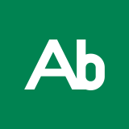

Decidi sul robot con un numero misurato.

Il fronte è verde di misura. Il segno Ab, ingrandito fino a uscire dal formato, si legge come un'impronta sul verde; sopra il logotipo e una frase all'imperativo. Corpo minimo del testo: 6,1 pt.
Il retro è una targa dati. Nome in B612, contatti in Barlow, monogramma su piastra verde come timbro. Etichette a 6,1 pt, numero di telefono di esempio.